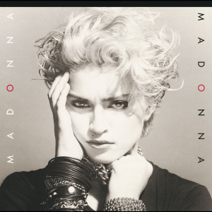
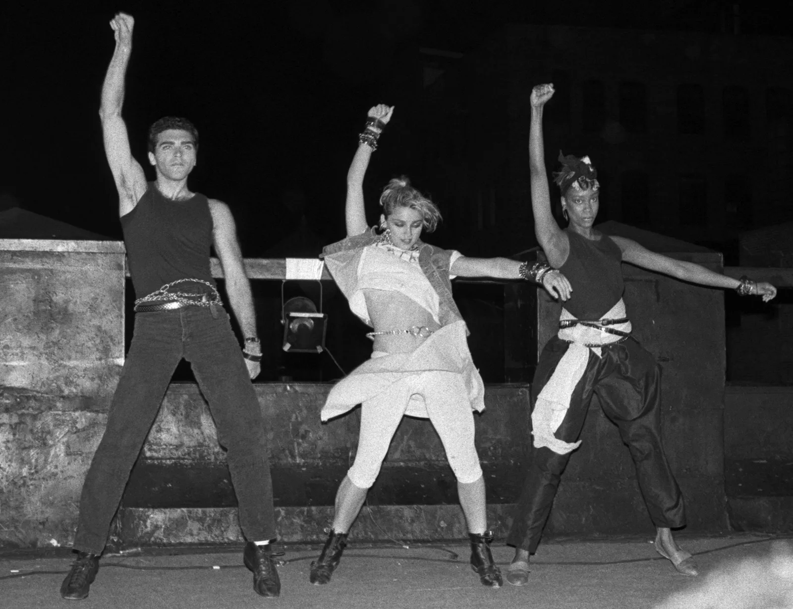
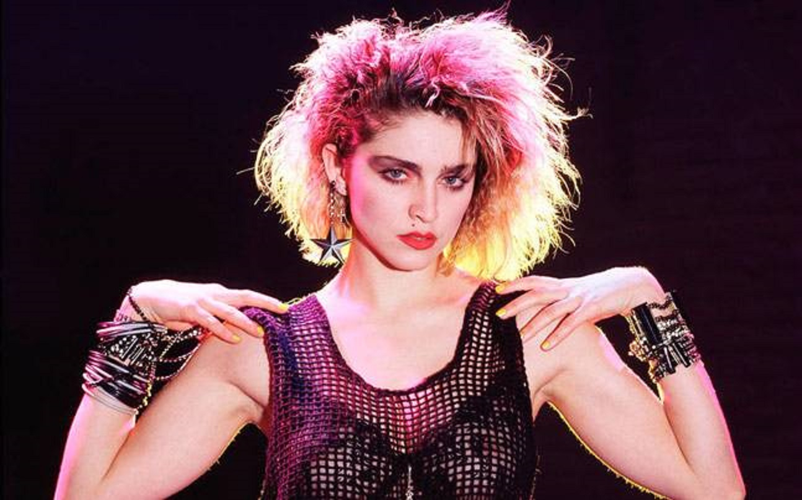

Madonna es el primer álbum de estudio de la Reina del Pop y también su primer homónimo. Lanzado a la venta en 1983, este proyecto introdujo a Madonna a la industria y dio a destacar su estilo único y personalidad imponente. Además, fue uno de los primeros álbumes de pop de los 80's al incorporar elementos de música disco, dance y new wave inspirados por artistas como David Bowie y Donna Summer. El álbum inicialmente tuvo un recibimiento moderado pero con el tiempo se convirtió en un éxito gracias al creciente éxito de Madonna y más que todo debido a la popularidad de su siguiente álbum: Like a Virgin. Cuenta con un total de 8 canciones, incluyendo los sencillos "Holiday", "Lucky Star" y "Borderline", los cuales ayudaron a establecer a Madonna como una artista emergente en el mainstream que venía de la escena alternativa nocturna de Nueva York. El álbum logró llegar al #8 en el Billboard 200 de E.E.U.U.

Madonna presentando "Everybody" por primera vez en la discoteca Danceteria en 1982.

Muestra del estilo único de Madonna en el video musical de "Lucky Star".